   


This application is created for educational purposes.
The application was developed as a result of practical tasks at RS School on the Stage 2 course.
The application is based on NewsAPI.
Author of a modified application ported to TypeScript: Yury Butskevich.
Original author of the application: Aleh Serhiyenia.
The application full code has been completely migrated to TypeScript.
The design has been improved and is fully adaptive and responsive. The design is made in a laconic style.
Added new icons and animations for application elements.
Added the ability to change the theme.
Added a convenient ability to work with a list of news sources.
Added highlighting of the selected news source.
Added animation of clouds above the ground and added the ability to disable/enable animation to improve user device performance.